Solving arithmetic problems: methods classified by first step
Most arithmetic questions can be solved in several ways. This report catalogs the methods for a family of ratio, fraction, and percent questions, and the word problems built on them. Each method is classified by the first step a student takes, with the second step used only when methods share a first step. The goal is an app that guides a student step by step: from each step the student writes, a classifier works out which route through the graph they are on, and the app responds with help for that route.
How the data is organized
Everything is written in one step language (see v2/vocabulary.json). A step is one thing a student does, and every step has a sentence. Steps run in sequence. all marks steps that can be done in any order. choose marks a decision with one correct option and its traps. use calls another question as a single step.
- Skills are small questions that other methods call: simplify a fraction, write it as a decimal, find a common multiple, cross products. Each has its own methods (a common multiple can be recalled, found by listing multiples, by multiplying, or from the GCF).
- Core questions (compare fractions, missing value, add fractions) have methods built from steps and skill calls.
- Applied questions are core questions in context: a proportion check is comparing fractions for equality, a better buy is comparing price ÷ quantity, and a percent of a number is a missing value with denominator 100.
- Word problems start with extraction: a set of decisions (which numbers go together, which way round, “more” or “in all”, which numbers aren’t needed), done in any order. Each decision has a correct option and traps, and the decisions together pick the question and its numbers.
v2/build.py expands every skill call into every combination of skill methods and every all block into every order, runs each variant on the examples to check the answer, and groups variants by their first step (then their second) to make the classifier’s trees. The hand-written first version is in v1/ for comparison.
Reading the graphs
Every diagram uses the same grammar, and every diagram carries a legend at the bottom.
- Rectangles are steps: the sentence, then the worked expression, then tags. A first step is tagged with its operation · scope; a step inside a called question is tagged in: that question.
- × hexagons are choices: the student picks one way forward. This is where the classifier works. Arrows leaving a choice are always labeled: with the method they lead to, or with the extraction answer (✓). Red dashed arrows are traps (✗).
- “all” diamonds split into branches that are all done, in any order, and join again.
- Boxes with side bars are calls to another question, shown with what goes in and what comes out; each has its own page.
- Thick green arrows carry data into a question: the extracted numbers, with what they count.
- A method is a route, not a box. Steps that methods share are drawn once, and the method’s name sits on the arrow where its route becomes unique.
What expanding the skills revealed
Shared first steps that only appear once skills and all blocks are expanded:
- In compare fractions,
3 × 7starts both cross-multiply and rewrite one fraction over the other’s denominator (through missing value’s cross-multiply). The next step decides:5 × 4vs21 ÷ 4. - In proportion check,
6 ÷ 8starts both decimal and rewrite over the other’s denominator, andGCF(6, 8)starts both simplify and the same rewrite. 3 × 5 = 15can come from listing multiples or from multiplying; the graphs show it as one step.
Known limit: the generated trees store a student-chosen multiplier as a wildcard, so a typed classifier sees 4 × 25 as matching three methods. The per-example graphs tell those apart by value.
How the questions reuse each other
Green = skill, yellow = core, blue = applied. Solid arrows: a method uses that question as a step. Dotted arrows: the applied question is the core question in context. (compare-fractions also calls itself: distance from 1 ends by comparing the two gaps.)

| Question | Kind | Methods | Uses |
|---|---|---|---|
| Add two fractions | core | 3 | common-multiple, cross-products, missing-value, simplify-fraction, to-decimal |
| Compare two fractions | core | 11 | common-multiple, compare-fractions, cross-products, missing-value, simplify-fraction, to-decimal |
| Find the missing value in a proportion | core | 6 | simplify-fraction, to-decimal |
| Which is the better buy? | applied | 6 | compare-fractions |
| Find a percent of a number | applied | 6 | missing-value |
| Are two ratios proportional? | applied | 11 | compare-fractions |
| Find a common multiple | skill | 4 | — |
| Cross products | skill | 1 | — |
| Simplify a fraction | skill | 2 | — |
| Write a fraction as a decimal | skill | 2 | — |
Word problems: extraction concepts and 12 stories, drilled down to the arithmetic.